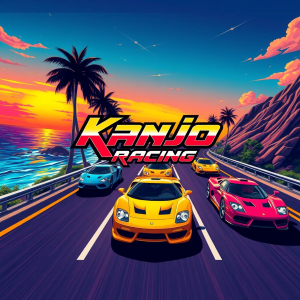
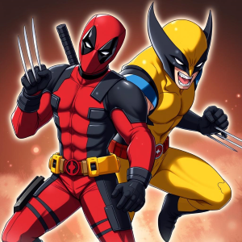
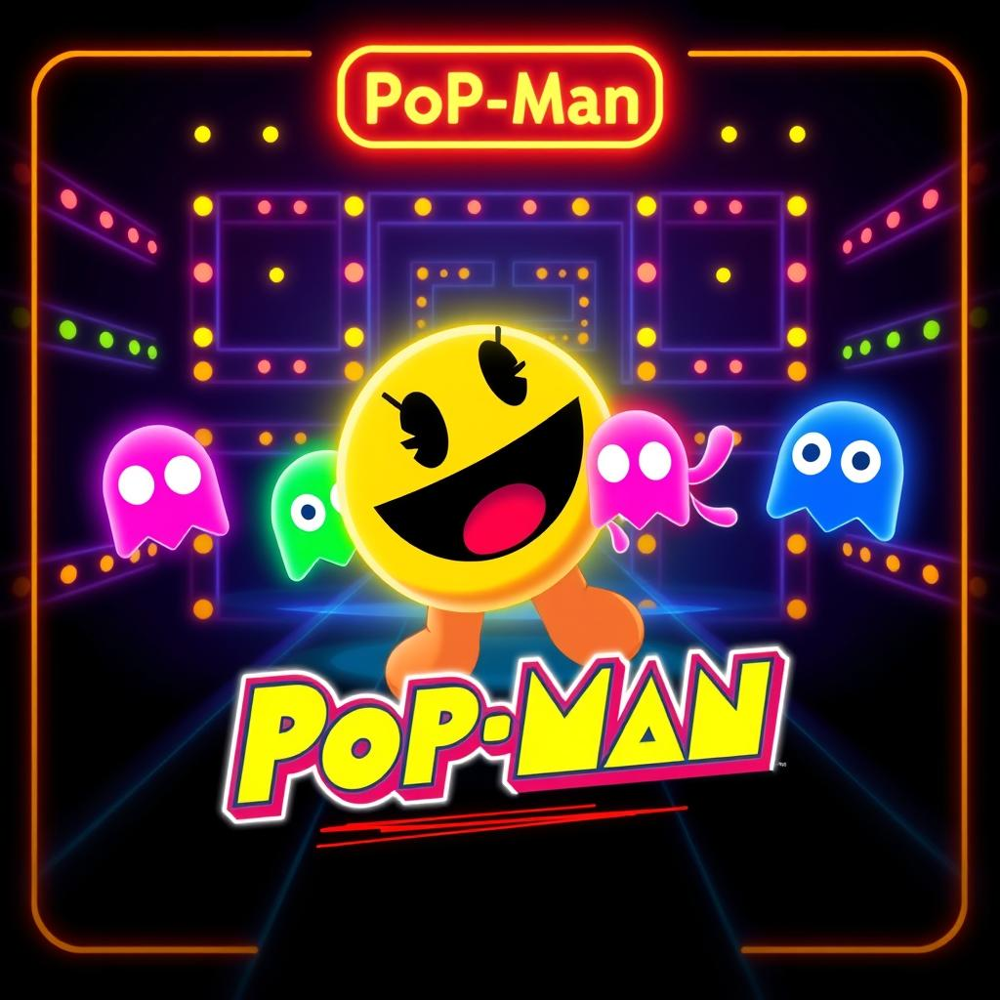

Kanjo Racing
Reviva a era dourada dos anos 80 com carros clássicos e pistas iluminadas por néons. Enfrente desafios emocionantes e prove que você é o campeão das corridas retrô!

MemoryPool
Desafie sua mente com cartas inspiradas em Deadpool & Wolverine, cheias de personagens do multiverso. Encontre os pares e prove que você pode acompanhar o ritmo interdimensional!

Popman
Guie Pop-Man pelo labirinto clássico, devorando pontos e frutas enquanto foge dos fantasmas. Coma Power Pellets para virar o jogo e enfrentar Blinky, Pinky, Inky e Clyde. Teste seus reflexos e veja até onde consegue ir nesta aventura arcade icônica!